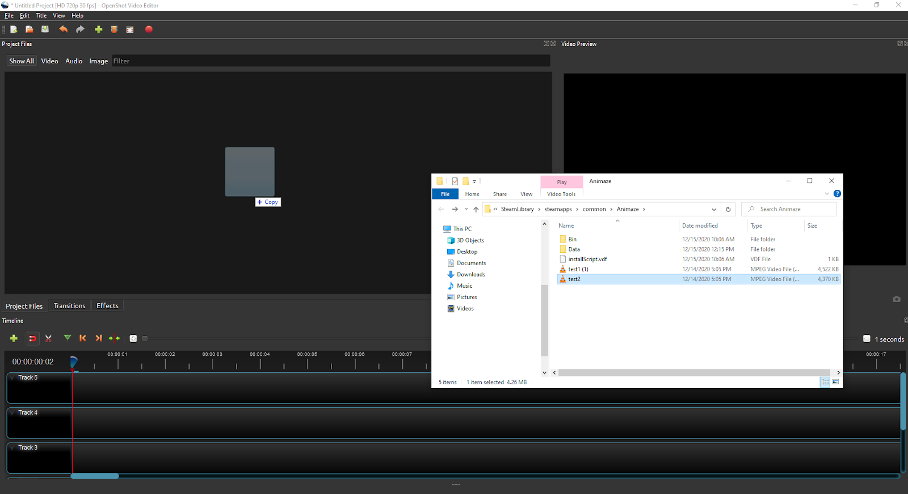
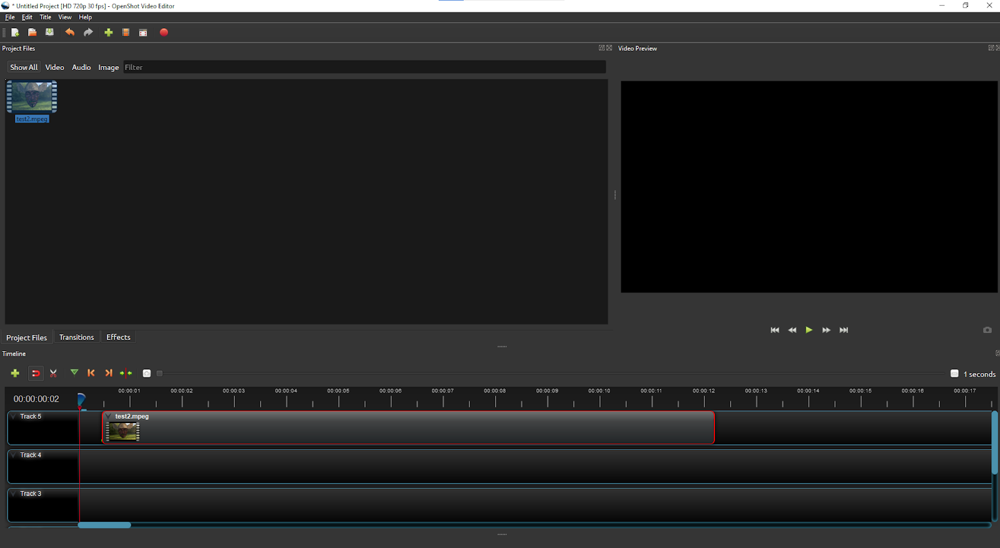
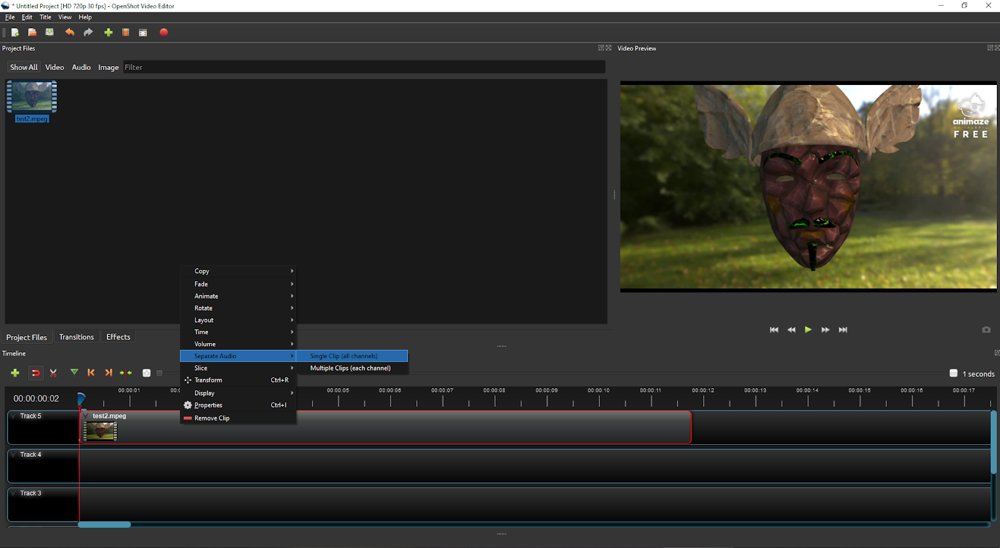
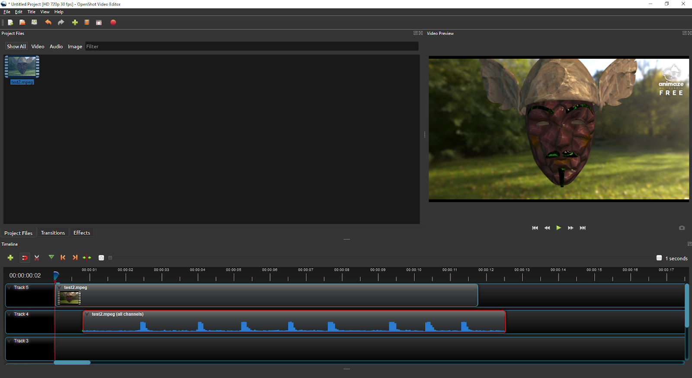
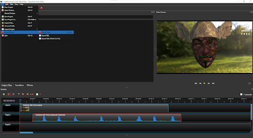
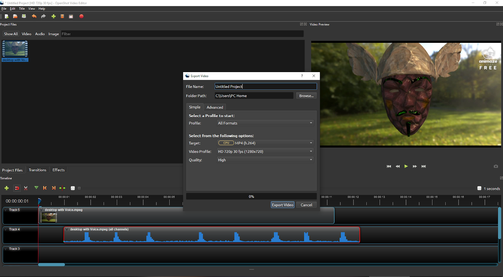

Animaze Desktop: How can I add a video/audio delay after saving a recording?
Video Recording in Animaze is in Early Access and has some known issues. Sometimes videos recorded through Animaze will have their audio and video slightly out of sync.
We are working on system-level fixes to eliminate this problem. Until those fixes are live, you can use any video editing program to re-sync your audio and video manually. We’re going to show you how to do this in OpenShot. OpenShot is a free open source video editing tool that you can download from: https://www.openshot.org/download/.
Whenever you are recording, make sure you are properly lit and your avatar is calibrated right before recording. This will ensure you can create the highest quality output. For more info, please check our FAQs regarding lighting and webcam setup here.
Additionally, please note that audio sync results may vary depending on what microphone you use.
If you have performance issues when recording (such as dropped frames) remember to turn on V-sync and set the app to run at a lower frame rate (48 or 30 fps) from the Animaze Settings menu in the Video Graphics tab. Lowering Render Scale, Shadow Map Resolution, and Fur Quality will also increase video stability and quality.
Currently, Animaze videos are captured at a static resolution of 1280x693 pixels.
Here are the instructions for manually re-syncing your audio and video using OpenShot:
Open OpenShot video editor and drag your Animaze Recording over the "Project Files" tab

From the "Project Files" tab drag the video to one of the Timeline Track

Right click on the video in the Timeline tab and go to "Separate Audio->Single Clip

Click and drag the audio track to move the audio until it is in sync with the action happening in the video

Export the video in any format you choose

